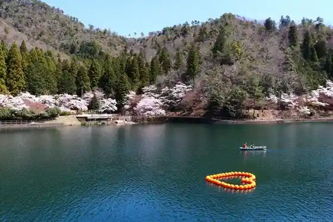
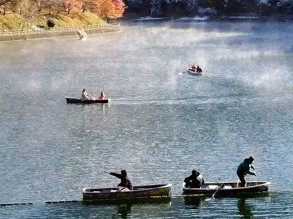
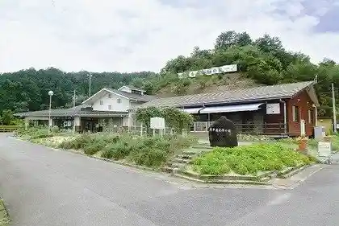
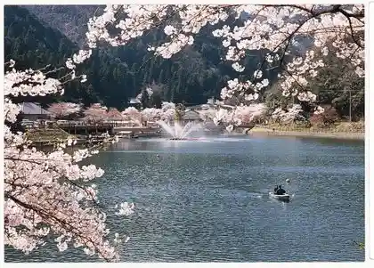

Ijira Mizumi
Yamagata, Gifu · 0581-78-4008 · Official / source link

Ijira Mizumi Wakasagi Tsuri
Yamagata, Gifu · 0581-78-4008 · Official / source link

Ijira Mizumi Kan Minami Tera
Yamagata, Gifu · 0581-78-4008 · Official / source link
Yamagata Kaori Hall
Yamagata, Gifu · 0581-22-5400 · Official / source link

Ijira Mizumi Cherry Blossoms
Yamagata, Gifu · 0581-78-4008 · Official / source link

Kan Minami Tera no Edohigan Sakura
Yamagata, Gifu · 0581-22-6830 · Official / source link
Nyuji no Mori Park no Onami Sakura
Yamagata, Gifu · 0581-22-6830 · Official / source link
Shikoku Yamaga Ri no Mori Park
Yamagata, Gifu · 0581-22-5400 · Official / source link
Toba Kawa Saikuringurodo no Sakura Namiki
Yamagata, Gifu · 0581-22-6830 · Official / source link
Yamagataichigo Rakuen Masa
Yamagata, Gifu · 0581-36-2663 · Official / source link
Akechimitsuhide no Haka (Kikyo Tsuka)
Yamagata, Gifu · 0581-22-6830 · Official / source link
Okuwa Castle Ruins (Kojo Yama)
Yamagata, Gifu · 0581-22-6845 · Official / source link
En Harakawa no Fukuryu Mizu
Yamagata, Gifu · 0581-22-6830 · Official / source link
Ajisai no Yamadera Sanko Tera
Yamagata, Gifu · 0581-52-1054 · Official / source link
Nansen Tera
Yamagata, Gifu · 0581-22-6845 · Official / source link
Jugo Sha Shrine
Yamagata, Gifu · 0581-27-2002 · Official / source link
Roku Man Haka
Yamagata, Gifu · 0581-22-6845 · Official / source link
Shikoku Horiato
Yamagata, Gifu · 0581-22-6845 · Official / source link
Yukinori Iwa (Mugi Kawa)
Yamagata, Gifu · 0581-22-6830 · Official / source link
Deto Kawa no Hotaru
Yamagata, Gifu · 0581-22-6830 · Official / source link
Fureai Bazaru
Yamagata, Gifu · 0581-53-2125 · Official / source link
Sanko Tera no Ike
Yamagata, Gifu · 0581-52-1356 · Official / source link
Guriin Plaza Miyama
Yamagata, Gifu · 0581-55-2615(8:30~17:00) · Official / source link
BBQ HOUSE
Yamagata, Gifu · 090-7029-5050 · Official / source link
YAMAGATA ENVOYEZ
Yamagata, Gifu · 0581-78-4008 · Official / source link
Kana Village
Yamagata, Gifu · 090-5850-2929 · Official / source link
Gorogoro Falls
Yamagata, Gifu · 0581-22-6830 · Official / source link
Haburendo
Yamagata, Gifu · 0581-22-5400 · Official / source link
Okuwa Shiro He Hajikami Kosu (Hajikami Rindo Tozanguchi)
Yamagata, Gifu · Official / source link
Okuwa Shiro He Kenkyaku Kosu (Kojo Yama Tozanguchi)
Yamagata, Gifu · Official / source link
Miyama no Mori Hotaru
Yamagata, Gifu · 0581-22-6830 · Official / source link
Yamagata no Kitayama Eria
Yamagata, Gifu · 0581-22-6830 · Official / source link
Ijira Lakeside no Autumn Leaves
Yamagata, Gifu · 0581-22-6830 · Official / source link
Experience Farm (Mitoka)
Yamagata, Gifu · Official / source link
Yamagata Basuketto
Yamagata, Gifu · 0581-32-9720 · Official / source link
Gifu Satoyama Keikan Kenkyusho
Yamagata, Gifu · 090-1624-0431 · Official / source link
Miyama Kanko Yana
Yamagata, Gifu · 0581-78-5896 · Official / source link